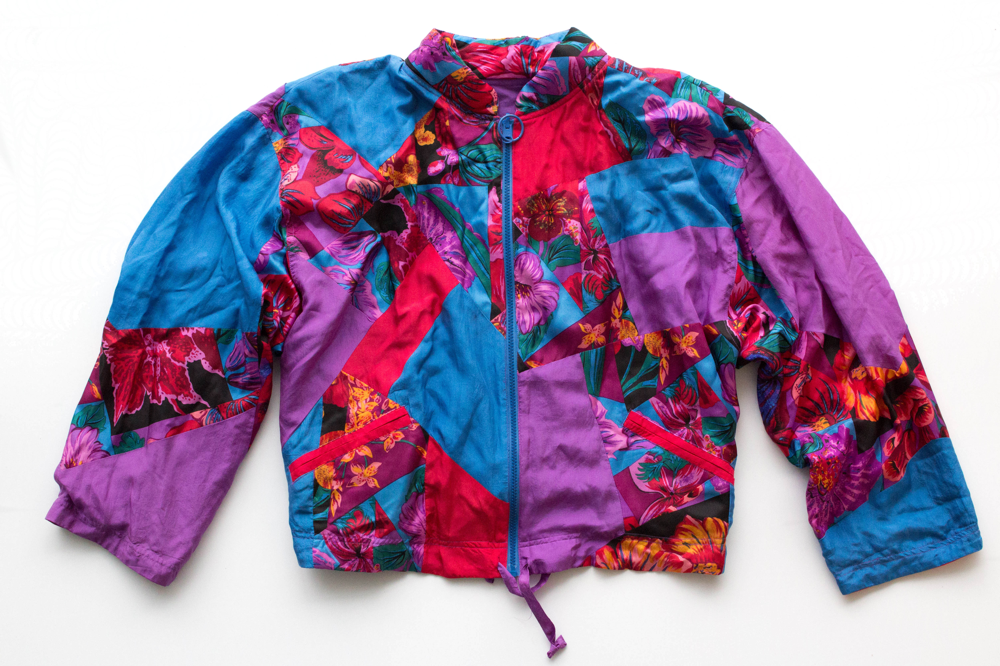

Kathryn woke up to the sound of a splash and the sight of a million splendid stars. Sitting up atop the hill that was the best kept secret in the entire state, the magnificent flowers that surrounded her seemed to awaken and sit up with her. As she ran her fingers through her perm and tightened her flamboyant, flower-covered jacket, she scanned the lake below for signs of what could have made such a brilliantly boisterous splash at this time of night. As her eyes drifted along the lake’s meandering banks, she began walking down the hill, treading lightly as if not to wake the figures in the constellations above.
Suddenly, Kathryn spotted a sinking car. Her pace quickening, her palms sweating, and her breaths shortening, she broke into a sprint towards the lake. Tearing off her sneakers, the high school senior wasted no time in diving into the cold water of late autumn in New England. Making a beeline towards the lake’s northwest corner, her purpose was too clear for her to spend time feeling the cold.
Reaching her destination, she took a deep breath and plunged beneath the surface. Pulling herself downwards through the water, Kathryn yanked at the car door to no avail. Resurfacing seconds later, she grabbed a piece of metal that had detached from the body of the car and dove again. This time, she stabbed at the car window with all the might she could possibly muster. It felt as if hours passed before the window pane finally broke and allowed her to free the man trapped inside.
After suffering a minor heart attack on the backcountry road that ran along the lakeside, the 35-year-old man, Dustin, had plummeted into the lake, where a massive shard of glass cut into his left arm as water poured into the car. With no one else around to help as they reached the bank of the lake, Kathryn ripped her jacket off, used it as a tourniquet to stop the bleeding in Dustin’s arm, and began to perform CPR as best as she knew how. “Ah, ha, ha, ha, stayin’ alive, stayin’ alive,” Kathryn chanted to herself as she went.
• • •
Dustin awoke in the hospital the next day to learn what had happened. After thirty five minutes of chest compressions, Kathryn, exhausted and alone, gave up and left a note on a soaking wet piece of her jacket, “I tried to help him for as long as I could, but I couldn’t save him. To his family, I am sorry. – Kathryn” She had not realized that his pulse had returned before she left. Not even ten minutes later, a local fisherman found the beat-up, but now-breathing Dustin by the side of road and transported him to a hospital some ten miles away, where doctors returned him to full health. The man spent the remainder of his life searching for Kathryn, hoping to thank her, but never succeeding. He was left to stare at the blood-stained, bright-colored, flowery jacket-turned-tourniquet and wonder. Until the end of his days, the man would hold that jacket dearly and imagine the mysterious girl who had brought him back to life. Nowadays, his daughter continues his search, telling the story patch-by-patch in the hopes that someone will recognize a patch of the jacket and find the Kathryn her father never could.